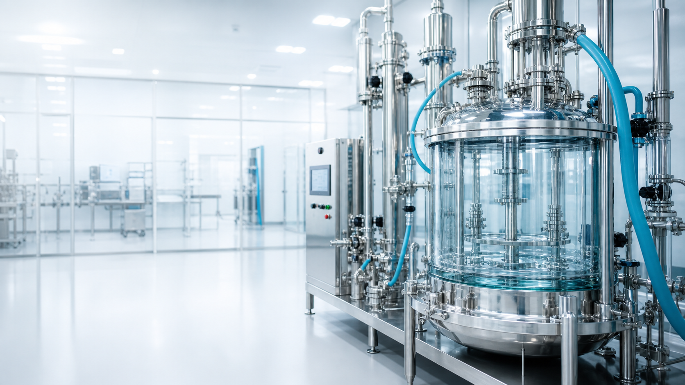

Фармсинтез
ПАО «Фармсинтез» — российская фармацевтическая компания, связанная с производством лекарственных препаратов, активных фармацевтических субстанций и разработкой современных решений для медицины.
Подробнее о компанииБолее 25 лет успешной работы
ПАО «Фармсинтез» работает в фармацевтической отрасли и развивает направления, связанные с выпуском готовых лекарственных форм, активных фармацевтических субстанций и контрактным производством. Компания известна на российском фондовом рынке под тикером LIFE.
Производственная и научная деятельность компании связана с препаратами для госпитального применения. В портфеле компании представлены решения для направлений, где особенно важны качество, технологическая дисциплина и соответствие требованиям фармацевтического производства.
На официальном сайте компании подчёркивается значение стандарта GMP, то есть надлежащей производственной практики. Такой подход важен для контроля качества, воспроизводимости процессов и безопасности лекарственных средств.
Подробнее о компании можно узнать на официальном сайте: pharmsynthez.com.
Основные направления деятельности

Компания занимается несколькими взаимосвязанными направлениями. Одно из них — производство активных фармацевтических субстанций. Такие вещества являются основой лекарственных препаратов и требуют точного соблюдения технологических параметров.
Второе направление — выпуск и сопровождение готовых лекарственных форм. Здесь важны не только химическая и биологическая часть разработки, но и упаковка, контроль качества, фармаконадзор и работа с документацией.
Также компания развивает исследовательские и инновационные проекты. Это направление включает поиск новых молекул, улучшение методов синтеза и работу с перспективными лекарственными технологиями.
История и развитие
История «Фармсинтеза» связана с развитием отечественной фармацевтической промышленности. Компания постепенно расширяла производственные возможности, развивала научную базу и формировала портфель препаратов.
Важной частью развития стало присутствие компании на публичном рынке. Акции ПАО «Фармсинтез» торгуются на Московской бирже, что делает компанию открытой для инвесторов и требует регулярного раскрытия информации.
Для фармацевтической компании публичный статус особенно значим: инвесторы оценивают не только финансовые показатели, но и научный потенциал, производственную базу, качество управления и перспективы препаратов.
Производство и качество
Фармацевтическое производство требует строгой организации процессов. Ошибки в такой сфере недопустимы, поэтому большое внимание уделяется качеству сырья, стабильности оборудования и контролю каждого этапа.
Для компании важны современные производственные мощности, лабораторный контроль и соответствие требованиям отрасли. Именно поэтому в описании деятельности «Фармсинтеза» часто встречаются темы качества, технологий и научно-производственного комплекса.
Отдельное значение имеет работа с препаратами для сложных медицинских направлений. Такие продукты должны проходить тщательную проверку и соответствовать требованиям медицинского применения.
Препараты и разработки
Среди препаратов и продуктовых направлений компании встречаются решения для онкологии, инфекционных заболеваний, гинекологии, нефрологии и других областей. Это подчёркивает специализацию компании на медицински значимых направлениях.
Разработка лекарственных средств — длительный процесс. Он включает исследования, регистрацию, производство, контроль качества и последующее наблюдение за безопасностью применения. Поэтому для компании важны не только заводские мощности, но и научная компетенция.
На сайте компании можно найти сведения о препаратах, инновациях, производстве и информации для инвесторов. Это делает ресурс полезным как для специалистов, так и для акционеров.
Информация для инвесторов и партнёров
«Фармсинтез» объединяет производственную базу, научные компетенции, портфель лекарственных препаратов и публичное раскрытие информации. Такая структура делает компанию понятной для партнёров, инвесторов и специалистов фармацевтической отрасли.
Акции компании торгуются на Московской бирже под тикером LIFE. Финансовая информация, новости и сведения о корпоративных событиях помогают следить за развитием компании и её положением на рынке.